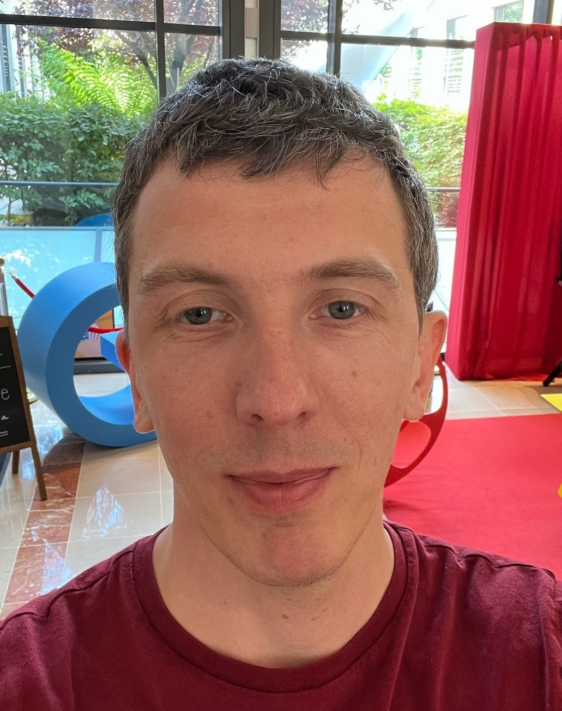

Affiliation
Research scientist, Google Brain, Paris.
Contact
mblondel AT google DOT com (work) or mathieu AT thisdomain DOT org (personal)
News
- 2019/09/02: I have joined Google Brain in Paris as a research scientist.
- 2018/12/23: Our paper "Learning Classifiers with Fenchel-Young Losses: Generalized Entropies, Margins, and Algorithms" was accepted for publication at AISTATS 2019.
- 2018/05/11: Our papers "Differentiable Dynamic Programming for Structured Prediction and Attention" and "SparseMAP: Differentiable Sparse Structured Inference" were accepted for publication at ICML 2018.
- 2017/12/22: Our paper "Smooth and Sparse Optimal Transport" was accepted for publication at AISTATS 2018.
- 2017/09/05: Our two papers "Multi-output Polynomial Networks and Factorization Machines" and "A Regularized Framework for Sparse and Structured Neural Attention" were accepted for publication at NIPS 2017.
- 2017/05/13: Our paper "Soft-DTW: a Differentiable Loss Function for Time-Series" was accepted for publication at ICML 2017.
- 2016/08/12: Our paper "Higher-order Factorization Machines" was accepted for publication at NIPS 2016.
- 2016/04/25: Our paper "Polynomial Networks and Factorization Machines: New Insights and Efficient Training Algorithms" was accepted for publication at ICML 2016.
Short bio
I obtained my PhD in machine learning from Kobe University, Japan, in 2013. From 2013 to 2019, I was a researcher at NTT Communication Science Laboratories in Kyoto, Japan. I am now a senior research scientist at Google Brain in Paris, France.
Past interns
- Arthur Mensch (INRIA)
- Vivien Seguy (Kyoto University)
- Vlad Niculae (Cornell University)
- Antoine Rolet (Kyoto University)
- Sonse Shimaoka (Tohoku University)